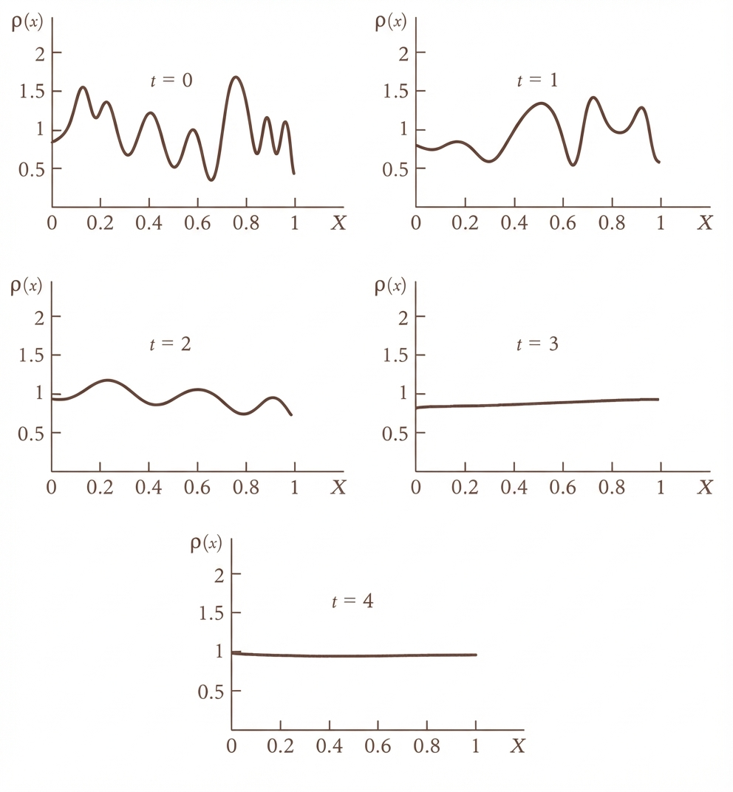

Introduction
Emergence might be one of the least understood yet most prevalent terms in today's science. For many, it is just another buzzword with no formal definition or explanatory power. People use Emergence to express how persistent complexity (from the formation of molecules, proteins, life, and even galaxies) can arise spontaneously from a seemingly random universe.
To find the connection between the randomness and emergence, we should first interrogate the concept of randomness. What is a random sequence? When talking about randomness, we have to make a distinction between two senses of randomness: the physical and mathematical. The mathematical sense of randomness is usually defined in terms of Kolmogorov complexity. In other words, a sequence is random if the size of the program that generates it is greater than or equal to the size of the sequence itself. This means that the sequence is not "compressible" with a code.
The physical sense of randomness is different, though. Quantum mechanics introduces the concept of randomness to physics. A quantum system, such as an electron in a superposition of states $|0\rangle$ and $|1\rangle$, does not possess a definite value prior to interaction. Its state is described as a vector in a complex Hilbert space, specifically residing on the surface of a Bloch sphere for a two-level system (qbit).
In physics, we often use a Hamiltonian to describe the time evolution of a system. In QM, the Hamiltonian is described by the Schrödinger equation. Note that the Hamiltonian is inherently a time-reversible unitary operator. It only rotates the superposition of states, but doesn't explain how we get the final single value. This is known as the measurement problem, which manifests as wave-function collapse. While unitary evolution follows a definitive trajectory in Hilbert space, measurement acts as a projection operator, collapsing the state vector into a specific eigenstate of the observable. This transition represents a "leakage" of information because it transforms a coherent, high-dimensional superposition into a single, classical data point, a process whose exact physical mechanism remains one of the greatest unresolved mysteries in physics. This "leakage" of information is the perfect example of emergence. We, as observers, only measure how the results of an experiment emerge, without a clear way to predict them.
Some physicists, such as Gerard 't Hooft, believe that there could be a deterministic explanation underlying quantum mechanics. This means that the randomness we observe from the bit values could be only a byproduct of measurement resolution limitation. In other words, the randomness we see isn't "true" randomness; it's just that our tools are too "blunt" to see the underlying clockwork that occurs in much faster processes. This imposes a "superdeterminism" that can bypass Bell's theorem problem with hidden variables. We don't go that far here, but we can still entertain the idea.
Universe as a Shift Space
What do we mean when we say a "seemingly" random process can be totally deterministic?
The emergence of random bits from measurement can be studied in the language of symbolic dynamics. To understand how a deterministic law can produce apparent randomness, we must look at the isomorphism between continuous maps and shift spaces. Consider the Bernoulli Map (or Dyadic Map) acting on the unit interval $I = [0, 1)$:
$$T(x) = 2x \pmod 1$$For example if $x_0 = 0.11010011\cdots$ then $T(x_0) = 0.10100111\cdots$. As you can see, the binary sequence shifted left, and the leading digit was removed.
While this is a simple linear expansion in continuous space, its true nature is revealed by transforming the state space into a symbolic space. Every real number $x \in [0, 1)$ can be encoded as an infinite binary sequence $\omega = (\omega_0, \omega_1, \omega_2, \dots)$ where $\omega_i \in \{0, 1\}$. This encoding discretizes the continuous interval into a binary partition:
- $\omega_i = 0$ if the state falls in $[0, 0.5)$
- $\omega_i = 1$ if the state falls in $[0.5, 1)$
The action of the Bernoulli Map $T(x)$ on the number $x$ is topologically conjugate to the Left Shift Operator ($\sigma$) acting on the sequence $\omega$:
$$\sigma(\omega_0, \omega_1, \omega_2, \dots) = (\omega_1, \omega_2, \omega_3, \dots)$$In this framework, the time-evolution of the system is simply the deletion of the leading symbol. Here, the "measurement" simply corresponds to reading that leading symbol ($\omega_0$). However, because of the limitation of physical resolution, we can only access a finite window of bits (called "cylinder set" in symbolic dynamics terminology).
The left shift $\sigma$ acts as a pump that transports information from the microscopic scale to the macroscopic scale. As the system evolves ($\sigma^n(\omega)$), these hidden microscopic bits emerge to the observable window. Even though the shift is totally deterministic, the impossibility of knowing the whole "initial condition" to infinite precision creates randomness.

Rationality vs. Ergodicity
But let's get more precise: what is the nature of the bitstream $x_0$? We can categorize it into two cases:
- Periodic Orbits (Rational Numbers): If $x_0 \in \mathbb{Q}$, the symbolic sequence is periodic (e.g., $\overline{100}$). The system is deterministic and predictable, even with finite resolution.
- Aperiodic Orbits (Irrational Numbers): If $x_0 \notin \mathbb{Q}$ (which is true for almost all numbers in the measure-theoretic sense), the sequence is non-repeating.
If the emergent sequence is an irrational number, it means that the trajectory visits partitions $\{0\}$ and $\{1\}$ with the same frequency. This can be strengthened by considering not only $\{1\}$ and $\{0\}$, but also terms of length 2 and, in general, length $n$. We call this ergodicity or more precisely strongly mixing.
It seems that even though our universe has emergent bits of irrationals (randomness or noise), it also has many patterns (rationals). Otherwise, we could not see all the orders around us.
The Illusion of the Continuum and the Arrow of Time
Looking at the measurement problem and collapse of the wave function through the lens of symbolic dynamics shows that the emergence of new information is what defines the arrow of time. It is nothing but the progressive revelation of the "microscopic" digits shifting into our observable range. We are perceiving this influx of data as an increase in entropy. This whole experience comes from moving away from the smooth, unitary progression of time and stepping into the discrete world. We are witnessing one of the biggest changes in physics in the last couple of decades: more and more physicists are convinced that discrete structures are the best way to describe reality at the most fundamental levels. Information is replacing the previous ontological concepts of "energy", "momentum", "charge" etc.
The appeal of finding deterministic laws on a smooth manifold stems from the historical success of calculus. We have become accustomed to the "unreasonable effectiveness" of mathematics, specifically the Real Number system ($\mathbb{R}$). We assume that a physical theory must exist on a smooth manifold of phase space, where variables can take on any value with infinite precision. This assumption conflates the Mathematical Continuum (an abstract construct of infinite divisibility) with the Physical Continuum (what we actually observe). But as Henri Poincaré argued, the physical world does not behave like the real number line.
Poincaré's Threshold: The Intransitivity of Sensation and Measurement
Poincaré proposed that the physical continuum is defined not by points, but by our limits of perception, what he termed Le Seuil (The Threshold). This aligns with Gustav Fechner's concept of the Just-Noticeable Difference (JND).
In the mathematical world of real numbers, equality is transitive: if $A=B$ and $B=C$, then $A$ must equal $C$. However, in the physical world of finite resolution, "equality" really means "indistinguishable within measurement error". (Note that this obviously goes beyond our immediate senses to our measurement devices. The limit of measurement is limited by the wavelength (or the energy) of the photons that we can create.)
This "indistinguishability" leads to a logical contradiction known as the Intransitivity of Indistinguishability: If we have three objects with weights $A = 10\text{g}$, $B = 11\text{g}$, and $C = 12\text{g}$, and our sensation threshold is $1.5\text{g}$: We cannot distinguish $A$ from $B$ ($|10-11| < 1.5$), so physically $A = B$. We cannot distinguish $B$ from $C$ ($|11-12| < 1.5$), so physically $B = C$. However, we can distinguish $A$ from $C$ ($|10-12| > 1.5$), so $A < C$. We are left with the paradox:
$$A = B, \quad B = C, \quad \text{but} \quad A \neq C$$This contradiction is what Poincaré used to identify the "physical continuum". We can no longer use mathematical smooth, continuous transformations to describe physical reality.
The logic of distinguishability is bounded by the wavelength of our probe. To resolve finer details (distinguish $A$ from $B$), we must increase the energy (shorten the wavelength), but we ultimately hit a limit, whether it's the Planck length or the observer's resolution.
Afterword
The debate over whether reality is fundamentally deterministic or emergent has been a core question in modern physics. If a "final theory" exists, the randomness we observe may simply be a local byproduct of a much larger, repeating deterministic structure.
As we saw, the answer to this question can be completely independent of the underlying emergent behavior of reality. The bitstreams that pop up from the quantum level are responsible for all the randomness as well as the structure of our universe. If there is a final theory that can describe the whole of reality, then the randomness we observe is just a local phenomenon and will eventually repeat itself. As crazy as it sounds, this possibility can't be refuted altogether (look at Roger Penrose's Conformal Cyclic Cosmology (CCC)).
Conversely, we can succumb to the idea of pure emergence: that reality is an open-ended computation generating novel, incompressible information just like the irrationals. In this view, time is the progressive revelation of a sequence with no "master program" small enough to contain it.